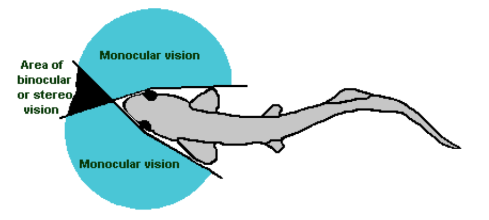
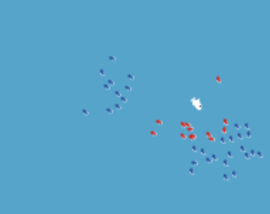
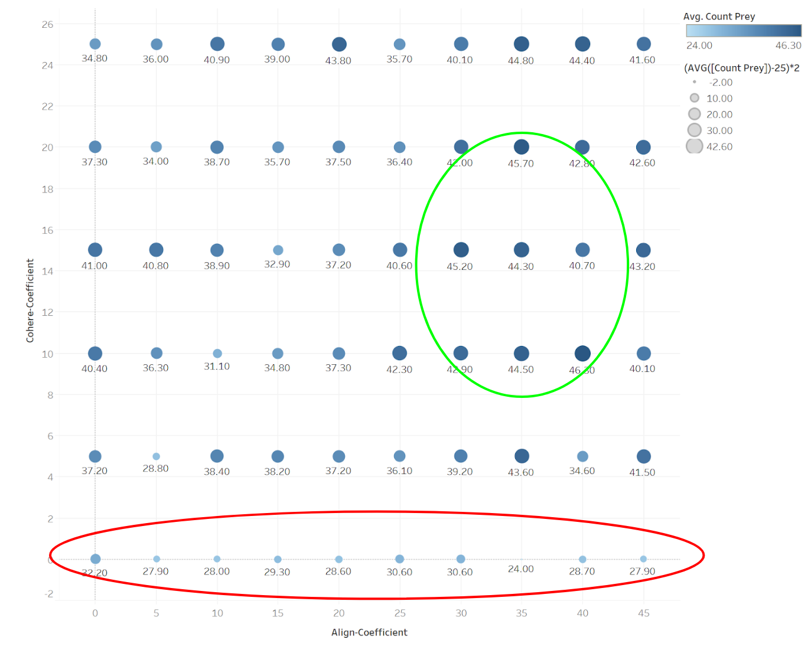

Agent-Based Models
An agent-based model is a model which intends to simulate the actions and interactions of many individual agents, in order to study the resulting behavior of the system as a whole. Agents can be anything: animals, molecules, or people within an organization or society.
Classes of agents follow the same programmed set of rules, and the goal is to keep the rules as simple as possible, to be able to assure correctness of the model. If the agents' rules are guaranteed correct, the resulting behavior of the system is indisputably a representation of reality. Agent-based models have enabled the simlification and proving of complex theories in biology, social science, and economics, to name a few.
Personally, the course I took on agent-based modeling was an excellent excercise in thinking about phenomena from both a birds-eye view and the perspective of individuals, and being able to trace a link between the two. I gained an intuition for observing emergent phenomena in the world around me, and uncovering how that phenomena emerged as a result of the actions of indivuals, something that has already began serving me in my personal and professional life.
The Model
For my term project in this course, I built a model that tests one hypothesis on why certain fish exhibit schooling behavior. The “Many Eyes Hypothesis”: Schooling fish work together to identify and avoid predators, enlarging their effective field of vision. Almost all fish have a field of vision like this:
Swimming together as a school, in theory, allows fish to have their blindspot covered because it is unlikely that an entire group of fish all have their backs to a predator. Wikipedia states that it is unproven whether or not this hypothesis is true. My agent-based model sets out to test this hypothesis, isolating the predator-prey hunt from already proven variables such as sensory confusion and cognitive overload.
To exhibit schooling behavior, the fish follow three basic rules:

Align - Face same direction as neighbors

Cohere - Stay close to neighbors

Qualitative Results
In the screenshot below, the red prey fish can "see" the predator (white), and the blue prey fish cannot. "Seeing" is based on field of vision and distance, and the red fish actively avoid the predator. Because of schooling behavior, the blue fish that cannot yet see the predator follow their schoolmates' lead and adjust course to avoid the predator.
Predators wander randomly until they find a prey, and will turn black if they catch a fish. The below video shows the model running at full speed and then in slow motion.
Quantitative Results
The next step was to quantify whether schooling actually helped the fish survive or not. I set up an experiment to test different values of "align coefficient" and "cohere coefficient," with (0,0) being no schooling, the fish only flee predators individually and separate to avoid bumping into each other. At each configuration, I ran the model 10 times for 1000 time steps each and averaged the surviving number of prey fish. 10 runs at each point was enough to show a clear trend, with schooling increasing survivorship by 50% as you'll see below. More runs would have made smoother trend, but I did not have enough compute available.
